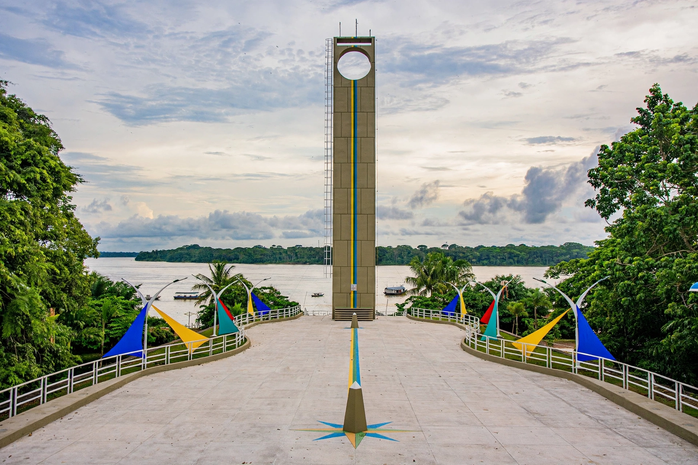

| Country | Brazil |
|---|---|
| Region | North |
| Capital and largest city | Macapá |
| Area | 142,829 km² |
| Population | ~733,800 (2022 census) |
| Borders | French Guiana, Suriname, Pará; Atlantic Ocean |
| Key features | Amazon delta, Oyapock River, Tumucumaque Mountains |
| Time zone | UTC−3 (BRT) |
Amapá (Portuguese pronunciation: [ɐmɐˈpa]) is one of the 26 states of Brazil, in the country's far north on the Atlantic coast at the mouth of the Amazon River. It borders French Guiana to the north (across the Oyapock River), Suriname to the northwest, and the state of Pará to the south and west. Its capital, Macapá, sits directly on the Equator — marked by the Marco Zero monument and an "equatorial" football stadium, the Zerão, whose halfway line is said to follow the Equator — and is the only Brazilian state capital unreachable by road from the rest of the country.
The coast between the Amazon and the Oyapock was disputed between Portugal and France for two centuries; the Treaty of Utrecht (1713) assigned it to Portugal, but French incursions continued, including a brief French occupation in 1895 that ended with arbitration by Switzerland in Brazil's favor (1900) — the "Amapá Question". Detached from Pará as a federal territory in 1943 for strategic frontier defense, Amapá became a state under the 1988 Constitution. Its modern development began with the ICOMI manganese mines at Serra do Navio (1957–1997), served by the Amapá Railway and the port of Santana, then Brazil's largest industrial mining venture in the Amazon.
Most of Amapá is lowland Amazon rainforest, flooded várzea along the great river, and coastal mangrove and savanna enclaves. The state is one of Brazil's most protected: some 70% or more of its area lies in conservation units and Indigenous lands, including Tumucumaque Mountains National Park — at roughly 3.9 million hectares, among the largest tropical-forest national parks in the world — and Cabo Orange National Park at the Oyapock mouth. The Amazon delta here meets the Guiana Current, producing rich fisheries and the dramatic pororoca tidal bore on the Araguari River.
The economy rests on public administration, mining (gold, kaolin, and chromite, with manganese historically), timber and açaí from managed floodplain forests, and fisheries. The BR-156 highway runs from Macapá north to Oiapoque, where the binational Oyapock River Bridge — completed in 2011 and opened to traffic in 2017 — gives Brazil its only road link to French Guiana, and thus, in principle, to the European Union's South American territory. Gold rushes in the interior, especially around Lourenço and the Cassiporé, have repeatedly created social and environmental crises policed by federal operations.